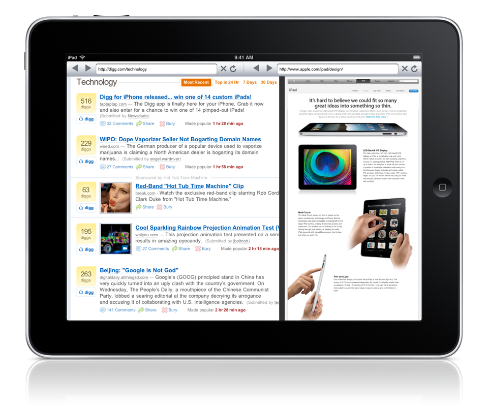
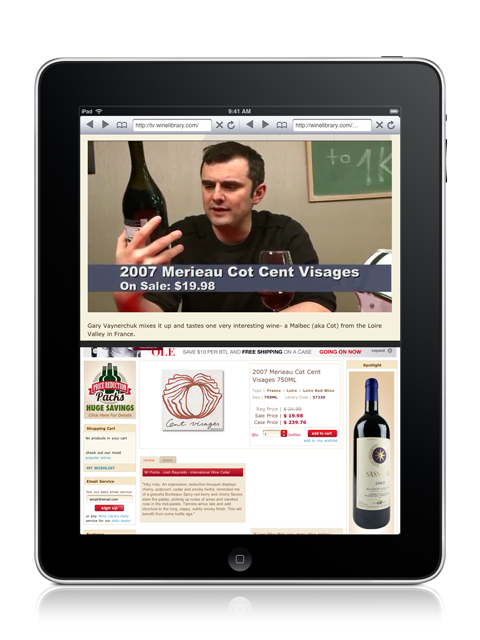

SplitBrowser for iPad



This app offers you the best web experience on the iPad, allowing you to stream a video while checking out your emails;
Listen to music on one page while surfing the web on the other, maybe looking for the biography of the artiste you're listening to.
Zoom, scroll, resize pages and open images, hyperlinks and videos with a simple touch.
This is the ultimate MULTITASKING web experience.